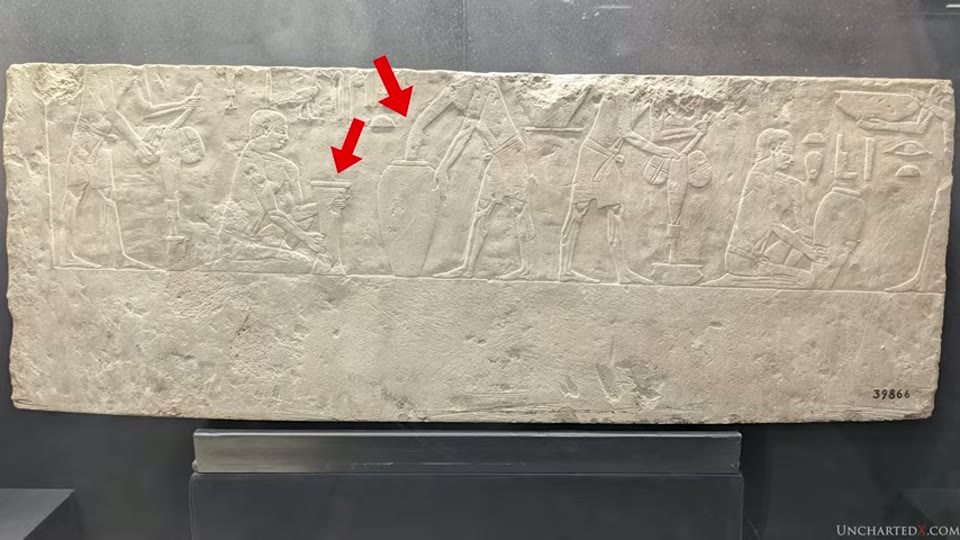
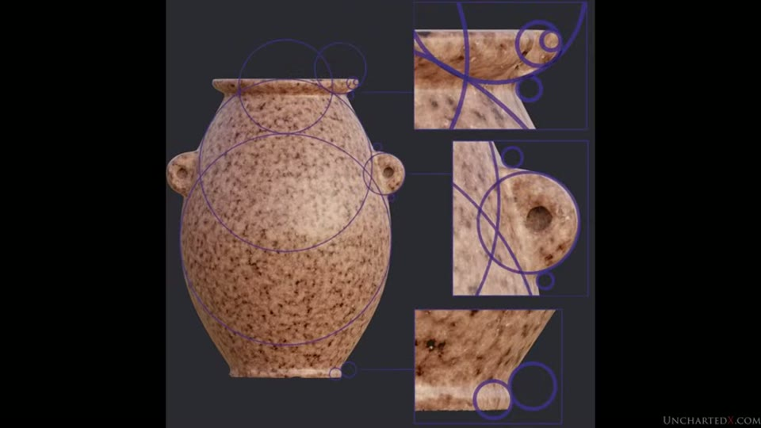
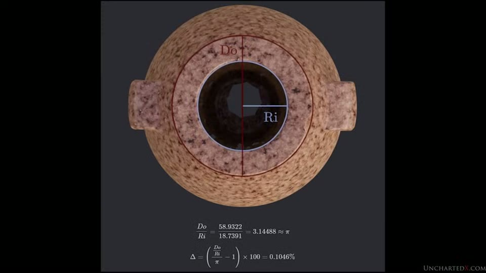
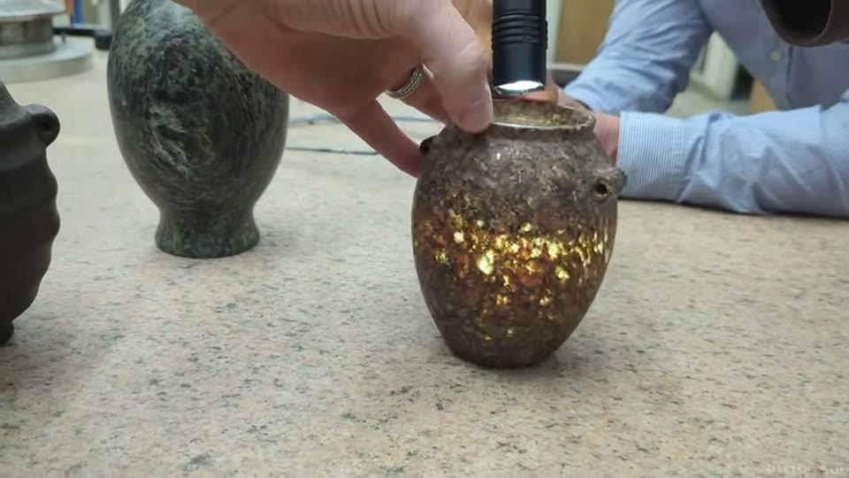
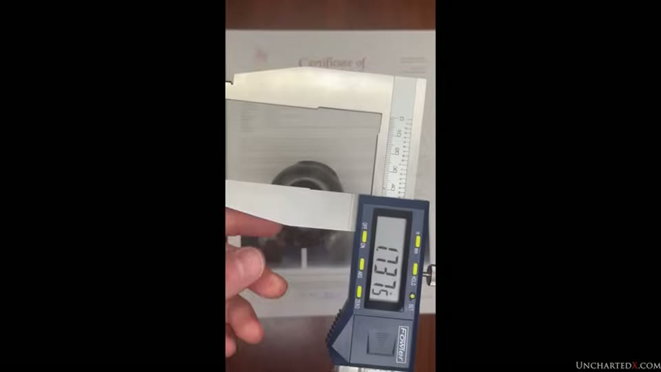

UnchartedX
The Tiny Ancient Artifacts Changing History! Ancient Egyptian Hard Stone Vases - Huge Updates
Ben · 112 min · watch on YouTube · summarised 2026-09-28
This is a status report on a measuring project rather than a discovery video, and its structure follows from that. Ben spends the first twenty minutes establishing what the objects are and how many there are, the middle hour on what the measurements found, and the last half hour on the objection that the objects are fakes. He is explicit that the script runs to about 14,000 words and that it is a deliberate catch-up: his previous dedicated video on the project was in November 2023, and none went out during 2024 01:37–02:50.
The underlying claim is narrow and he states it several times in the same words. It is not that stone cannot be worked by hand. It is that the results found in some of these particular objects cannot be obtained by hand, and that nobody has demonstrated otherwise.
The objects, and the fact that there are a great many of them
Hard-stone vessels from Egypt — granite, diorite, porphyry and similar — dated from predynastic times into the Old Kingdom 04:45. Ben's estimate is that more than 100,000 are in circulation today, and the figure he leans on is an excavation count rather than an estimate: Jean-Philippe Lauer, digging beneath the Step Pyramid at Saqqara in the mid-1900s, recovered and documented between 40,000 and 50,000 from that one location 05:43–06:00. (The name is badly mangled in the audio — it arrives as three different spellings — and is reconstructed here from context; see the note at the end.)
He stacks two further points on it. Lauer was not the first to dig there, only the first to document it properly, so what left the site in the preceding decades is unknown. And Flinders Petrie collected several thousand over his career, where "collected" includes buying vases from vendors in Egyptian markets in the late 1800s — which establishes, on Ben's reading, that a private antiquities market for these objects was already running well over a century ago 06:18–06:41. That fact returns in the provenance argument an hour later.
Reports from the early 1900s, he says, describe 1,000 to 2,000 vases coming out of sites like Saqqara in a single day 06:44.
The dating, and the pottery imitations
The claim that the vessels are predynastic is, he stresses repeatedly, the mainstream archaeological position and not a controversial one 07:53–08:04. They are found in predynastic burials across Egypt and in Second, Third and Fourth Dynasty burials.
He does pick a fight with the dating method itself. Where a vessel carries crudely scratched inscriptions relating it to a particular reign, that writing is used to date the object — and he argues the scratching looks like later defacing on a superior artefact, so it dates the graffiti rather than the vase 08:21–08:51.
The argument he clearly considers his strongest on dating is indirect, and it is worth following because it does not depend on any measurement:
- Stone vessels appear in excavation photographs from burials at Toshka, carbon-dated to roughly 15,000 years ago, taken around 1905 10:59–11:15.
- In the same photographs there are pottery vessels painted to imitate the swirls of breccia, and others painted to imitate granite. That these are imitations of hard stone is, he says, acknowledged by museums and archaeologists — he points at the British Museum's own text on the imitation pottery in its predynastic section 11:31–12:21.
- Therefore the people in that burial knew of and possessed the hard-stone vessels.
- And, he argues, you do not imitate a thing you can make yourself 12:37–12:56.
The British Museum panel is on screen and legible, headed Models and imitations, Early – Middle Predynastic, 3900–3300 BC. Ben's spoken response is to the first half of it — "you should be a touch skeptical anytime someone starts invoking Magic" — and the half he does not address is the last sentence:
"Imitations of stone vessels and foreign jars allowed their owners to enjoy luxuries probably unattainable in their lifetime."
That is the museum answering the question he puts immediately afterwards, and answering it economically rather than technologically: the imitation stands in for an object the buried person could not obtain, not for an object nobody could make. It is the same shape as the Imhotep panel an hour later — the cited source addresses the rhetorical question, and the video engages with a different part of the panel. Note also that this panel is dated 3900–3300 BC, not to the 15,000-year horizon the Toshka argument runs on; they are different bodies of material.

Pottery imitations of stone vessels are acknowledged by museums; the museum's own reason for them is economic, not technological.
Everything else in those burials is fishbone combs, beads and hand-formed pottery, in shallow graves with skeletons in the fetal position 13:32–13:44.

Stone vessels appear in burials whose other contents are primitive.
His proposed resolution is inheritance rather than manufacture: primitive cultures would have recognised the objects as valuable, moved them up their social structures, imitated them in pottery and buried them with their leaders 13:51–14:25. He extends the same reading to the early dynasties, and says Djoser's collection of more than 40,000 vessels was assembled by robbing older tombs — which he notes is written on the walls of the Imhotep Museum, where many are described as inherited heirlooms 14:43–15:06.
He then makes a concession that is unusual for the genre and which cuts the ground from under the argument he has just made. The Toshka sites are under Lake Nasser and cannot be revisited; the records are thin; the excavations were by Harvard and Boston around the turn of the 20th century; and the surviving references are to "wares", which could be stone or ceramic 15:37–16:02. His answer is that it does not matter — 4,000 BC or 13,000 BC, the same problem stands, and arguing the date is a distraction from the precision 16:29–17:15.
The two industries, and the museum's own wall text
This is the part of the video that does the mainstream work, and it is the most checkable section in it.
Alabaster is a fine calcite, about 3 on the Mohs scale, against 6.5 and up for the harder igneous rocks; it is homogeneous and workable with flint or copper 19:18–19:32. The Egyptians made alabaster vessels throughout their civilisation by a process depicted in inscriptions: a weighted bent stick with a flint tip, spun into the stone to grind out the centre, then rubbed and polished by hand 19:43–20:08. And the results, he says, are visibly not precise — wonky, asymmetrical, out of round, not level 20:26–20:41.

The inscriptions cited as showing how the vases were made depict the alabaster process.
Against this he sets the objection that the tomb scenes show how the hard-stone vases were made. His rebuttal is to quote the Imhotep Museum at Saqqara — the museum attached to the site where 40,000-plus vases were found, and which houses the inscriptions in question — at length 01:20:49–01:21:21:
The panel is legible on screen, and it is headed Imhotep and the carving of stone vessels:
"During the reign of Djoser, Imhotep, as master craftsman, supervised the production of vessels in calcite (Egyptian alabaster) instead of the harder stones used more commonly in the Early Dynastic Period. The beauty of the stone, with its delicate veins, translucence, and smooth texture, was greatly valued in this era. Vessels were shaped first with dolerite pounders and copper chisels. The inside was hollowed by using a drill formed by a wooden shaft with a crank at the top and a flint blade at the bottom. Two heavy stones were placed on top of the drill to press it into the stone."
His point is that the scene is the museum's own account of the alabaster industry specifically, not of hard-stone manufacture, and that pointing to it to explain granite vases means going against the mainstream position rather than citing it 01:21:31–01:21:37. He notes the museum separates the two categories into different sides of the same room.
The same comparison is made on camera in a filmed segment beneath the Step Pyramid 28:49–30:11, over fragments lying on the floor where they were found rather than in a case: the alabaster pieces thick on one side and thin on the other, the hard-stone fragment with a flat bottom, a pronounced tube-drill mark in the centre where a core was snapped off, and walls that taper consistently from base to lip. Two voices are speaking and neither is identified on screen.

The two kinds of vessel lie together where they were found, and the difference is visible without instruments.
The sentence in italics is on the panel and is not in what he reads out. He goes from "…Early Dynastic Period" straight to "Vessels were shaped first with dolerite pounders". It matters because it is the museum answering the question he puts to the reader earlier at 20:50–21:29 — why abandon a superior product for a primitive process in a softer stone? The panel's answer is that calcite was prized for its appearance: its veining, its translucence and its texture. That is a reason to choose alabaster which has nothing to do with capability, and it is offered by the same source he is citing. It does not touch his precision argument, and he does not engage with it.


The museum at the site where the vases were found says the depicted process is for alabaster, not for hard stone.
He adds a practical follow-up: the alabaster factories on the West Bank at Luxor will demonstrate the same technique today, with steel tools — and are not attempting it on granite 01:22:56–01:23:18.
The logical form of the argument appears earlier, at 20:50–21:29, and stands on its own: if the dynastic Egyptians could make the precision hard-stone vases, why do they essentially stop after the third or fourth dynasty, and why replace a superior product with a primitive process producing inferior vessels in softer stone?
What he says he is not claiming
A long stretch of the video 27:17–39:48 is a response to critics, and the part worth recording is the statement of position, because it is narrower than the claim usually attributed to him 28:19–28:47:
"I have never said you can't carve stone by hand. I've never said that you can't grind through granite with copper or sand or anything of that nature, because of course you can… What I do say is that you can't get the same results that we see in some of these ancient examples with those primitive by-hand methods."
He restates the burden of proof in Christopher Dunn's four steps: examine the original artefact rigorously, describe the theorised method, perform the work including the most difficult parts, and compare the result against the original taking all its characteristics into account 37:09–37:42. His list of characteristics an attempted replication would have to match: millimetre wall thickness, relative geometry, mathematical design with embedded ratios, and consistency 37:45–38:03.
The attributes he says the critical videos never address 32:01–34:58: wall thinness — one of Matt Beall's vases is translucent at about 2 mm in the centre, and he has a diorite fragment down to about 2 mm near the lip; interiors hollowed out through necks too narrow to reach through, an observation he credits to John Anthony West for a porphyry vessel in the Cairo Museum, and to Danny Jones for the interior top of a flat vase; relative geometry; and the mathematical design.
He also cites Petrie documenting a diorite bowl one-fortieth of an inch thick — just over half a millimetre 32:33–32:38. (The audio gives "140th of an inch", which is 0.18 mm and does not match the "just over half a millimetre" he says in the same breath; one-fortieth does. The figure here is the internally consistent reading, not a verified one.)
On the hand-made counter-example he is more specific than usual. Olga Vavina's vase is treated as a genuine attempt and he says so — "kudos to her for the attempt" — but he argues the result is not in the same range, and that a rotating table on precision bearings was used, which is modern equipment 26:12–26:58. The measured version of that claim arrives ninety minutes later.
The scans, and what was measured
Adam Young acquired a predynastic granite vase and had it scanned with structured light, accurate to under a thousandth of an inch; Chris Dunn telephoned Ben about it in 2022 22:01–22:30. For scale, Ben gives a human hair at 2–3 thousandths of an inch and printer paper at 5–6, and notes there are about 25 microns in a thousandth 22:33–23:05.
The analysis was done by aerospace engineers and metrologists — named in the video only as Nick and Alex — in PolyWorks, using the standard procedures for inspecting a precision part: put the object in a Cartesian grid, then measure how the parts relate to the centre line, how perpendicular the neck is to the top, how flat the top is, how the lug-handle centre lines align 40:32–41:07. The difference from ordinary industrial work, he notes, is that there is no design to compare the part against — the work runs backwards 41:10–41:16.
Ben stresses that Adam Young open-sourced the scan data, which is downloadable, and returns to this repeatedly as the answer to accusations of a black box 42:38–42:56.
The design argument
The strongest single claim in the video is not about precision at all. It is that the OG vase was designed, and Ben attributes the finding to Danish cryptographer Mark Qvist, who published it in written articles on his own site 43:06–43:46.
The claim 45:38–48:18:
- Most of the vase's features are defined by arcs of circles.
- The radii of those circles are not arbitrary. They are related to each other by one equation — the radial traversal pattern. The slide gives it as R(n) = (√6⁄2)ⁿ, and cites
unsigned.io/articles/2023_03_17_Abstractions_Set_In_Granite.html. - Qvist found it by noticing that features of the vase correlate with overlapping grids of circles — the Flower of Life construction, which Ben is careful to describe as "pretty much just geometry" rather than anything mystical.
- It matches 12 different circles, with radii from 1.1 mm to 42.2 mm.


The vase's features follow arcs of circles whose radii are interrelated, not arbitrary.
The test Qvist then ran is the part that makes it checkable. He built a CAD model from the mathematics alone — not from the scan — and compared it against the scan. The slide gives the median radial deviation across all circles as 9 µm, or 0.35 thousandths of an inch 48:31–49:12.

A model built from the equation alone matches the scan to a median of 9 microns.
The circular features that did not fit the traversal pattern were found, he says, to encode π and φ. The π slide shows the arithmetic rather than the conclusion: outer lip diameter over internal opening radius, 58.9322 ÷ 18.7391 = 3.14488, a deviation from π of 0.1046%.

The ratio of outer lip diameter to inner opening radius is pi to about 0.1%.
The neck diameter over the same radius is φ² to within 0.07% 50:43–50:58. Taking the radius of the opening as a base unit of 1, the maximum lip diameter is π units, the minimum neck diameter is φ² units, and the radius of the foot is π⁄φ² units 51:32–51:51.
Ben's quoted summary from Qvist is the sharpest statement of the argument 53:23–54:18:
"…to see it completely consistent to microscopic precision across 12 different radii measuring from just 1.1 mm up to 42.2 mm in a granite artifact is more or less unfathomable… Here at least 15 levels of interrelation exist and they are all precisely in harmony down to microscopic scales."
The force of the argument is that the parameters are interlocked: changing one throws the others off, so a chance match on π or φ somewhere is a different proposition from a whole system agreeing.
Immediately after this comes the video's least cautious moment, and the audio drops out over a music break at 51:56–52:29, so it is recorded here from the slide rather than the narration. The base unit is 1 U ≈ 18.739 mm. The slide sets that against the wavelength of a 16 GHz wave in vacuum — 299,792,458 ÷ 16,000,000,000 = 18.737028625 mm — and notes the two are 2.07 µm apart. Ben's spoken comment is "make of that whatever you will".
The same slide carries Qvist's own warning, which is not read out: "Since we have observed dimensional deviations of between 20 µm and 32 µm in the measurements used to arrive at this number, we do not recommend using the above approximation as a basis for reference outside of this article." The gap being called a match is 2.07 µm; the stated measurement uncertainty on the number is ten to fifteen times that. The caveat is on screen for anyone who pauses.


Taking the opening radius as one unit makes the other dimensions pi and phi squared - and the article warns against using the unit outside itself.
That it is not one object
The reason the design claim matters more than the precision claim, in Ben's telling, is that a single extraordinary object is an anomaly that history can absorb. So the significant finding is that the same radial traversal pattern appears in two further Rose granite vases classified as predynastic — the thin-wall vase and the spinner vase 01:08:11–01:08:38.
His examples 01:09:34–01:12:52:
- Spinner vase: the ratio between inner and outer measurements of the top lip matches (√6⁄2)² to about 0.09%, or 0.02–0.03 mm. The ratio between the inner lip circle and the curvature of the top of the lug handle matches the same value to within two or three microns. The radius of the base curvature over the body radius is φ² with an error of 0.005% — about 0.029 mm.
- Thin-wall vase: height over width matches √(√6⁄2) to within 0.05%, or roughly 23–29 microns.
He is careful to say that not everything on the vases matches, that finding the ratios is trial and error, and that some features are off by a millimetre or several percent — his reading being that the function simply was not used to generate those features 01:10:12–01:10:31.
The spinner vase's behaviour is explained by the same geometry: three large circles of the same radius — R(6) in the traversal pattern — form the body, the centre one protruding below the others to create the spinning base. The measurement shown on screen reads 1.00088 mm 01:11:29–01:11:55. The slide's own wording is hedged where the narration is not: the same circles are "possibly" the ones giving the vessel width its φ² ratio.

The vase spins because the centre of three equal circles protrudes about a millimetre.
He notes a larger granite vase in the Egyptian Museum with the same feature, and complains that it keeps being moved into off-limits areas and dusty cabinets.
The physical inspections at Danville
Chris Dunn's suggestion was that the scanning be checked against physical measurement, so the vase owners, the aerospace engineers and Ben gathered at Danville Metal Stamping in Danville, Illinois — a precision manufacturer making defence and aerospace parts, with its own metrology lab 58:04–58:47.
The method 58:53–59:28: vase centred on a rotary table, precision tolerance gauges reading to half a thousandth of an inch for concentricity and roundness, precision calipers for wall thickness, multiple readings for consistency. The filmed segment is mostly numbers being called out across a bench, and the editor's on-screen captions carry what the audio does not — one records the thinnest part of a vase as a groove around its centre, 80 thou, 2.032 mm, with the wall beside the groove reading 83.

The scan results were checked by physical measurement in a commercial metrology lab.
Ben's stated reason for valuing the result is a good one and he names it: the CEO and board members of Danville were present, all engineers and machinists, with no stake in the results and no awareness of the controversy 01:03:32–01:03:56.
The comparison built into the trip is the more interesting half. They also inspected a marble vase made on a modern lathe in the 1990s 01:04:35–01:04:52. The result:
| on the rotary table | on wall thickness | |
|---|---|---|
| modern lathe-made marble vase | roughly 5 thou variation — similar to the ancient granite | at least 25× less precise; walls 2–6× thicker |
His argument from that table is deliberately modest and is the better version of his case: the fact that the ancient granite vases are merely in the same ballpark as a modern lathe-made marble vase on external surface variation is already hard to square with primitive hand tools, given that granite is heterogeneous — mica, hornblende, silica, quartz all bonded together, so the hardness changes constantly as you work it 01:05:20–01:05:47. The superiority shows when you compare the interiors.
The most extreme individual figure in the video comes from a CT-scanned vase in Matt Beall's collection: the diameter of the top lip measured in X and Y differs by four tenths of a micron — 15 millionths of an inch 57:26–57:52. It is spoken over a shot of the presenter at his desk; no report, screen or measurement appears with it.
What the heat-map sequence just before it does show is a CMM comparison screen, Result Data — 2D Compare, for one horizontal slice: min −0.005, max 0.006, average 0.002, RMS 0.003, standard deviation 0.002, with the editor's caption reading "this 'slice' is average +/- 2 thou". The same panel reports in-tolerance 68.98% and out-of-tolerance 31.02%. What tolerance band was set is not stated on screen or in the narration, so the percentages cannot be interpreted from the video alone.

One vase is thin enough at the centre to pass light.
Beall's vases were scanned with CT X-ray rather than structured light, which he describes as far more precise, down to the micron or sub-micron, and able to image the inside 55:56–56:22. He addresses the "data manipulation" charge directly: X-rays scatter off quartz crystals and produce errant points, and cleaning scan data is standard practice in any scanning process 56:24–56:53.
Provenance, and the charge that the vases are fakes
Ben treats this as the only surviving line of attack, because the scan data is public 01:15:19–01:15:52. His response has four parts.
That museum provenance is not what it is assumed to be. Museums acquire from dealers and markets; a great deal is on loan from private collections; and many museum objects are classified and dated by form, style and stone type, so the label may say "predynastic" without anyone knowing where the object came from 01:23:42–01:24:36.
That several scanned vessels have documented histories. Adam Young's large vase is carbon-14 dated via the burial it was found in and was given to a Czech ambassador in the 1930s as a gift, reaching the market through an estate sale 01:24:54–01:25:16. Matt Beall demonstrates a serpentine vase on camera, dated 3650–3550 BC, with provenance to the Royal Tyler family estate — Tyler living 1884 to 1953 and collecting in the 1920s. Beall measures the lip at 1.736 inches, rotates 90°, and reads 1.7375 — a 1.5-thou deviation 01:25:16–01:26:31.

A vase with documented provenance measures 1.5 thousandths of an inch out of round at the lip.
That the economics do not work 01:28:15–01:30:48. If you are faking antiquities for profit, why make them precise, why design them mathematically, and why choose granite, when nobody was measuring these objects until recently? Even poorly provenanced vases have histories back to the 1960s or 1980s, before five-axis CNC; the lug-handle geometry rules out a simple lathe; and plain unadorned stone vases were not worth much until his own videos raised their profile — buyers wanted statuary, carvings and objects with writing on them.
That the museum work has started anyway. In 2024 Adam Young and others spent two days at the Petrie Museum in London with structured-light scanners and photogrammetry. Ben reports from Young directly that at least half the vases analysed are precise, in the same low single-digit thousandths range 01:26:53–01:27:51. He adds a detail from the curators that cuts both ways: the Petrie Museum's several-thousand-strong collection represents only the bottom 5 to 10% of Petrie's artefacts — his teaching stock — with the good material given to benefactors and friends or kept.

The scanning work has moved into museum collections.
On Flint Dibble, named directly, the substantive charge is that in a Twitter exchange with Matt Beall he shifted from the analysis to the origin of the artefacts, told Beall to stop buying looted vases, and left the conversation 01:17:25–01:17:44. Ben declines suggestions that he debate him, on the grounds that Dibble is not an engineer and studies seeds and food-ways in ancient Greece 01:18:07–01:20:23. The passage is also the video at its least careful — "budget Indiana Jones", the sustained mockery — and the argument in it does not need the tone.
The electron microscope work: no copper
Dr Max Zamilov — a PhD engineer and physicist, eight years teaching at Penn State, now running Maximus Energy and doing fusion research — offered his scanning electron microscopes 01:33:58–01:34:24. An SEM gives both high magnification and a readout of elemental composition.
The finding Ben considers most significant is a negative one 01:35:09–01:35:54. Across the fragments examined the samples were clean, with very little contamination, and there was zero copper anywhere they looked. The argument: mainstream Egyptology has copper firmly in the toolkit, the vessels are generally tube-drilled as a first step — the drill mark is visible in the bottom of many of them — and the tube drilling is explained as grinding with copper tubes and sand. Microscopic copper embedded in the stone is what that explanation predicts.
What they did find, across six or seven fragments, in and around the tool marks from the tubular drills: tin, zirconium, zinc, iron and titanium, sometimes in combination 01:36:14–01:36:25. On one piece, a fragment 20 to 30 microns wide embedded in the stone inside a groove tool mark. He notes titanium was not identified as an element until the 1800s and was not used outside laboratories until the 1930s.

No copper was found in the tool marks; titanium was.
He is markedly more cautious here than elsewhere 01:37:24–01:37:41: "what does all this mean? I'm not exactly sure yet. I'm not jumping to any conclusions here and there is much more work to be done to make this a more methodical study." He says he still needs to talk to geochemists, and that the true significance is the absence of copper rather than the presence of anything.
The comparative study, and the two classes of vase
Zamilov's second contribution is the first study Ben knows of to compare metrology results across many vases at once 01:38:00–01:38:16. Its sample:
- 22 predynastic and early dynastic hard-stone vases from Matt Beall's collection
- 3 high-quality modern lathe-made vases
- 2 hand-made stone vases by Olga Vavina — one diorite, one marble breccia
The quality metric combines circularity error (how close slices of the vase are to a true circle, as root-mean-square error) and centering error (how well the centre points of radial features align with the overall centre line), for both inner and outer surfaces, since CT scanning models both 01:39:15–01:39:58. Results are plotted on a logarithmic vertical axis.
The results Ben draws out:
The plotted figure is Fig. 19, the bar plot of the quality metric M, with the class boundary drawn at 25 thousandths of an inch and every artefact labelled.
| quality figure | |
|---|---|
| Most precise ancient examples (V4 and V18) | circularity error 0.6 thou (15 µm); centering error 0.1 thou (2.5 µm) |
| Ancient vases, precise class | mostly 3–12 thou; the best two around 2–3 |
| Modern lathe-made marble vases (M1–M3) | around and above 10 thou; two of the three sit just under the line |
| Olga Vavina's hand-made vases (O1, O2) | both above the line, in the imprecise class |
| Ancient vases, imprecise class | 40 thou and up |
Two things are legible on the slides and not in the narration. The first is a caveat on the headline precision figure: "The centering error of the vase V18 is actually below the resolving ability of the analysis methodology used (0.2 thousandths of an inch)." The most striking number in the study is a number the method cannot resolve, which is stated on screen and passed over.

The most precise vases in the study are quoted at a centering error the method cannot resolve.
The second is the size of the concession. Counting the bars, 11 of the 22 ancient vases fall in the imprecise class — half the sample, not a minority of it. Ben describes two classes without giving the split.

Plotted together, the ancient vases fall into two classes and the modern comparisons sit among the weaker half.
Two findings come out of it, and the first is a concession:
There are two classes of ancient vase. Half the sample is very precise; the other half is at least an order of magnitude away. This mirrors the Danville physical inspections. Ben says it is what he has always maintained — that not all of them are precise, that "you don't really know until you measure", and that the point is that many of them are 01:41:46–01:42:38.
The modern comparisons sit worse than the ancient ones. The lathe-made marble vases only just enter the precise class, and the better ancient granite examples are two to four times more precise — in a far harder and less homogeneous material 01:43:12–01:43:43. On the plot the three modern vases sit among the weaker half of the precise ancient group, not at its floor.
He adds a direct test rather than a statistical one. Adam Young took the scan of one of his simpler vases, without lug handles, to a granite processing plant with more than a hundred years of experience, and asked for the most precise copy they could make in the same Rose granite. They used their best lathe and core-drilled the interior rather than hollowing it 01:43:45–01:44:27.
The comparison slide puts the two side by side with the measurement tables, ten sampled features each, and the column it circles is standard deviation:
| standard deviation across ten features | |
|---|---|
| the modern commissioned copy | 0.64 – 2.48 mm |
| the ancient original | 0.043 – 0.192 mm |
So the gap is roughly ten- to twenty-five-fold, which is what "an order of magnitude" is carrying. The figures are legible on the slide and are not read out.

A commissioned modern copy in the same stone is an order of magnitude less precise.
On the hand-made vases, he quotes Zamilov rather than characterising them himself 01:45:04–01:45:57:
"I must point out that Olga Vavina made the vase 01 using a plastic rotary table supported by a ball bearing to control the outer surface accurately through rotation, by painting the elevated spots with a sharpie marker. The use of modern technology in making the 01 vase represented a significant deviation from the initial objective… nevertheless both vases are classified as imprecise according to the proposed quality metric, despite the impressive outer surface circularity of 01 on only 5,000ths of an inch."
Where he takes it
The conclusion is stated as a chain rather than a single claim 01:48:12–01:49:18: the vases were designed and executed with technology; their machining links them to larger artefacts; and combined with evidence for cataclysm and for longer human timelines, this makes a history of inheritance, renovation and reuse more likely than the accepted account. He calls for a rewriting of the story of origins.
He also lists the work he has promised and not yet delivered: a dedicated video on the SEM results, one on Matt Beall's reports with Beall, and the analysis from the Egypt scanning trip 01:49:44–01:49:54. In late 2024 that trip took a structured-light scanner rated to 0.02 mm into the Serapeum before dawn, to a granite box with a limestone liner at Abu Rawash, to a granite box beneath another pyramid, and 150 feet below the Step Pyramid to scan hard-stone vessel fragments still in situ — his point about that last one being that a fragment that has been in the ground for thousands of years cannot be a modern forgery 01:31:45–01:32:55.
Also released as a short video
Two days later, on 28 February 2025, the provenance section of this video — running from about 01:14:26 to 01:31:36 — went out as a standalone 21-minute video, Are the Precision Ancient Stone Vases Modern Fakes? Provenance, and Scanning in the Petrie Museum! (QFPQ7jtLgB0), with the filmed segments from beneath the Step Pyramid moved in. It is the same narration; 83% of its words occur in this one, and the remainder is the same footage transcribed differently. Nothing is argued in it that is not argued here.
What you can check yourself
- The Imhotep Museum wall text. On screen and legible, in Arabic, English and French. It is the load-bearing citation of the whole two-industries section, it is a mainstream museum's own words, and it says "instead of the harder stones". Read the whole panel rather than the part quoted aloud — one sentence of it is skipped.
- The scan data. Adam Young's OG vase scan is downloadable from UnchartedX's site, and Mark Qvist's article is cited on the slides as
unsigned.io/articles/2023_03_17_Abstractions_Set_In_Granite.html. The 9 µm CAD comparison, the R(n) = (√6⁄2)ⁿ pattern and the π and φ ratios are recomputable by anyone with the file and the skills — the π slide shows its own working, 58.9322 ÷ 18.7391. - Zamilov's study. Linked from the video. Fig. 19 plots every artefact by label — M1–M3 modern, O1–O2 hand-made, the rest ancient — so the precise/imprecise split can be counted rather than taken on trust, and the caveats printed beside the figures can be read.
- Alabaster against hard stone in any museum with an Egyptian section. The comparison he builds his case on is visible without instruments: whether the alabaster vessels are asymmetrical and the hard-stone ones are not.
- The imitation pottery, and the panel beside it. The British Museum's predynastic section is the example he cites. Read the Models and imitations panel through to its last line; the museum gives its own reason for why imitations exist.
- Whether the vessels stop. His claim that hard-stone vases are essentially absent after the third or fourth dynasty is a counting exercise against museum catalogues.
What the video does not settle
- The metrology reports are largely not public. Ben says the analysis documents for the Beall vases "are not currently public" and that he hopes they will be. Zamilov's study and the open-sourced OG vase scan are the exceptions.
- The single most extreme number has nothing behind it on screen. The 0.4-micron difference between the X and Y lip diameters is the figure the video builds to, and it is delivered to camera with no report, scan screen or measurement shown. Every other headline figure in the video is at least displayed.
- Two headline figures are quoted past their own stated limits. The 2.5-micron centering error on V18 is, on the study's own slide, below the resolving ability of the method (0.2 thou). And the base-unit/speed-of-light correspondence is presented with the author's own instruction not to use the number outside his article, because the measurements behind it carry 20–32 µm of deviation against a claimed 2.07 µm agreement. Both caveats are on screen; neither is read out.
- The design argument has an unstated denominator. Qvist searched for ratios that fit, found matches to great precision, and found others that did not fit — attributed to the function not being used there. How many candidate ratios were tested, and what a null result would look like, is not addressed. The interlocking-parameters argument is the answer he offers, and it is a real one, but it is asserted rather than quantified.
- Two classes of vase is a finding that needs explaining, and the split is even. Counting the plotted bars, half the 22 ancient vases fall in the imprecise class. The two-industries split therefore reappears inside the hard-stone category, which is the one place the video's own framing does not expect it. Ben notes the two classes and neither gives the proportion nor pursues what it implies.
- The SEM work is preliminary and he says so. Six or seven fragments, no methodical sampling, no geochemist consulted, and no published write-up. Absence of copper across that sample is not yet absence of copper in the population, and contamination is ruled out on visual grounds rather than by protocol.
- Nothing dates the objects directly. The carbon-14 dates cited are of burials and contexts, not of stone. The predynastic attribution rests on archaeological classification — the same classification whose reliability he questions elsewhere in the video.
- "Cannot be done by hand" remains a negative claim. The strongest thing the video establishes is that the best documented attempts, by hand and by modern lathe, fall short by an order of magnitude. That is not the same as a demonstration of impossibility, and no mechanism for how the vases were made is offered.
- Both museum panels are read selectively, and in the same direction. The British Museum's predynastic panel and the Imhotep Museum's vessel panel are the video's two mainstream citations, and in each case the sentence that bears on the question the video treats as unanswered is the sentence not read out. Whether those answers are good ones is a separate matter — the point is that they are on screen, uncontested.
- The museum panel is quoted selectively. The Imhotep Museum text is the video's best citation and it is read out with one sentence missing — the sentence giving an aesthetic reason for the switch to calcite. The omission does not weaken the two-industries point the panel is cited for, but it removes the panel's own answer to a rhetorical question the video asks earlier and treats as unanswered.
- No mainstream metrologist or Egyptologist appears. The engineers at Danville had no stake in the controversy, which is the video's strongest procedural point, but nobody who disagrees with the conclusion examines the objects on camera.
The same evidence, argued the other way
Two videos on another channel take the vase scan project apart, and they are not disagreements at a distance — they concern the same objects, the same scans and several of the same people.
What They are Not Telling You About Precise Egyptian Stone Vases? reports that Mark Qvist, whose analysis of the OG vase is the centrepiece of the video above, wrote after a 2025 CT scan that the object "is definitely not 5,000 years old — it's either a modern replica, contemporary piece, or it was acquired as an ancient article, but later reworked". It also reports that Max Zamilov, whose comparative study is quoted above, reversed his position on the evidence; and it sets out an account from Stine Gerdes, who supplied metrological analysis to the project from mid-2023 to February 2025, of a break with Adam Young over a hand-made alabaster vase that measured more precisely than expected.
Ancient Egyptian Stone Vases: Lost Machining Techniques? answers the manufacturing argument by sequence rather than by measurement: stone bowls of comparable finish in the Levant millennia earlier, predynastic drilling of stone harder than granite, and an Old Kingdom relief showing the tool.
Neither account is settled here, and the dates are worth holding onto. The video above was published on 26 February 2025 and presents Qvist's design analysis and Zamilov's study as standing results. The counter-account places the CT scan, the reversal and the falling-out in the same window. Anyone following this further should read both and check what was known when.
Names heard rather than confirmed
This channel publishes no caption track, so every proper noun in the transcript is a machine reconstruction. The following were read from the chapter titles the channel wrote by hand, which are a human source: Mark Qvist, Matt Beall, Max Zamilov, Petrie Museum, Danville. These were inferred from context and are flagged as uncertain: Jean-Philippe Lauer (arrives as three different manglings), Olga Vavina, Abu Rawash, and the pyramid named only as "Lon" in the audio, which is not identified here. The figure of one-fortieth of an inch for Petrie's diorite bowl is a reconstruction from the millimetre value given alongside it.
The closing thanks list is the worst-recognised passage in the video — "Steen carolly poker kin Russ Allen Yousef aen" — and two of those names are probably Stine Gerdes and Károly Poka, read across from the other channel's coverage rather than heard here. Treated as uncertain.
One transcript reading was wrong and the frames caught it: the audio gives the two most precise vases as "V4 and V8", and the slide reads V18 and V4. On the plotted figure V8 is one of the least precise objects in the study. Every figure in this entry taken from a slide was read off the frame.